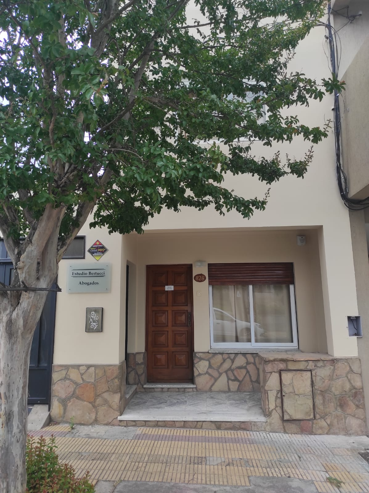
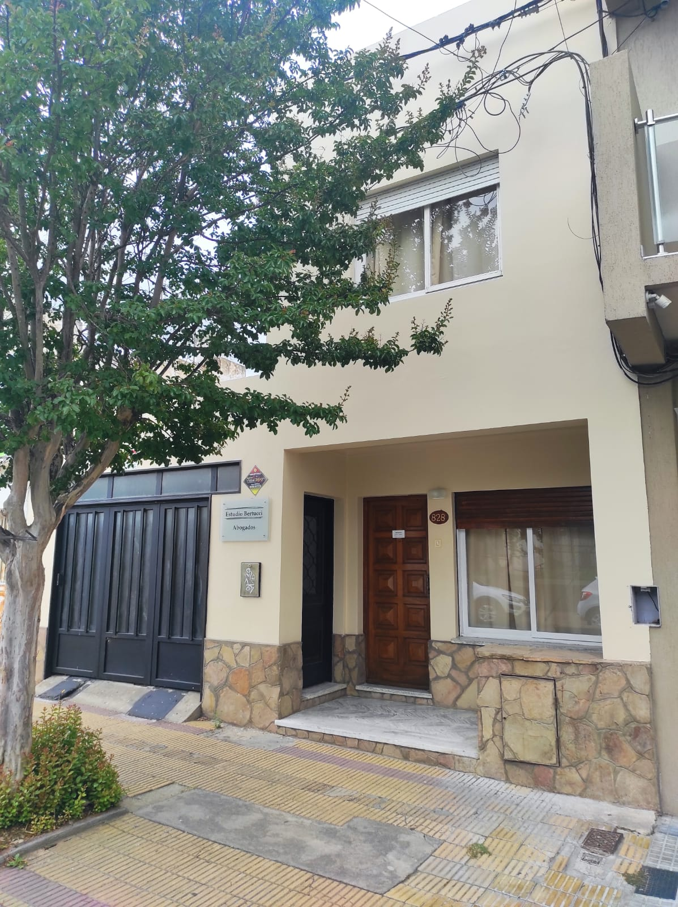

Llamá al estudio
Teléfono directo: 0249 411-6653.
Alberdi 828 · Tandil
Asesoramiento legal de confianza, con atención directa del profesional y consulta coordinada por teléfono.
Consultá tu caso
El estudio atiende en Alberdi 828 por la mañana. La forma más directa de empezar es llamar y acordar un horario dentro de la franja publicada: de lunes a viernes, de 9 a 13.
El primer contacto sirve para ordenar la consulta legal, confirmar si corresponde acercarse al estudio y coordinar una atención directa con el profesional. La información verificada del perfil público marca una referencia simple para quienes buscan asesoramiento en Tandil: teléfono activo, dirección concreta, horario matutino y reseñas de clientes que destacan responsabilidad, compromiso y buena atención.
Nuestros servicios legales se presentan con el mismo criterio: información clara para coordinar la consulta, sin prometer resultados ni sumar áreas de práctica que no estén publicadas en las fuentes del estudio.
Teléfono directo: 0249 411-6653.
Atención de lunes a viernes, de 9 a 13.
La fachada está identificada con la placa del estudio.

La referencia en la vereda
La fachada del estudio ayuda a reconocer el ingreso sin vueltas: revestimiento de piedra, puerta de madera y placa visible junto a la vereda. El dato importante queda siempre a mano para el cliente: dirección, teléfono y horario matutino.
En un tema legal, llegar con una referencia clara también baja la fricción del primer paso. Por eso el recorrido prioriza información concreta antes que promesas: dónde queda el estudio, cuándo atiende, cómo llamar y qué valoración dejaron las personas que ya pasaron por la consulta.
Clientes del estudio
Reseñas citadas tal como fueron publicadas. La valoración del perfil es 5 sobre 5, con 14 opiniones registradas, y las citas visibles mantienen el texto y la autoría disponibles en la fuente.
"Excelente profecional. Responsabilidad y compromiso"
Martin Dick
"Muy buenos profesionales!"
gabriel saez
"Exelente atención por parte de Juan Pablo Bertuuci!"
Sergio Orsatti
Coordiná tu consulta
Para evitar llamados fuera de horario: atención de lunes a viernes, 9 a 13. Sábado y domingo cerrado.
Si necesitás ubicar el estudio antes de acercarte, la dirección publicada es Alberdi 828, Tandil. El llamado permite confirmar el momento de atención y preparar una consulta más ordenada, sin sumar datos que no correspondan al primer contacto.
0249 411-6653